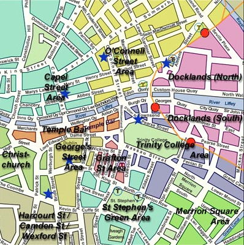

Interaction12 Blog
The Foodies Guide to Dublin
So after seeing some tweets (well two, to be exact) asking for food recommendations, I decided to put a little blog together on my favourite food spots in Dublin.
If there’s a category I didn’t get to, just find me or tweet me @coryannj. Happy eating!
Important – how the location info works
Actual address information is pretty unwieldy, so instead each place has an area name – you’ll then need to rely on old google for the details.
The area names are borrowed from this image – apologies in advance as it may hurt your eyes:

{kind=link}
As you can expect it’s not totally accurate – but will give you a sense of where you need to go.
That annoying place that fits in every category
Fallon and Byrne (Georges St – fallonandbyrne.com) – It’s a foodhall, deli, coffee bar, wine bar, and restaurant – just go.
Coffee
3fe (Capel St & Docklands South – 3fe.com) – The place to go if you weigh and grind your coffee before making it in your Aeropress.
Bald Barista (Camden St – thebaldbarista.com) – Owned by a Kiwi (don’t let that turn you off*). Also stocks amazing pies and food from The Gallic Kitchen.
Clement and Pekoe (Grafton St – clementandpekoe.com) – The type of place I’d expect to find the phrase “purveyors of tea” on the menu – but great coffee too.
Gastropubs
The Exchequer (Georges St – theexchequer.ie) – Long beer list, more classy than casual pub grub and roast to order every Sunday.
Against the Grain (Camden St) – Specialises in craft beers and hearty food.
L. Mulligan Grocer (Stonybatter – lmulligangrocer.com) – Slightly outside the city centre (7 euro taxi ride) but great range of beers and the type of menu someone has put a lot of love into.
Bull and Castle (Christchurch – bullandcastle.ie) – Bit less gastro, more pub, but decent pub food upstairs and a restaurant downstairs.
Hole in the wall
Bottega Toffoli (Christchurch) – If you can find it and get a seat (fits 12-ish max), it’s the best pizza in Dublin.
Japanese
Kokoro (Capel St – kokorosushibento.com) – More take-away than sit down, but dazzling array of sushi as well as hot food.
Yamamori (Capel St & Georges St – yamamori.ie) – More sit down than take-away, with decent enough sushi.
Asian
Hop House (O’Connell St – hophouse.ie) – Mostly Korean, with a doorbell on each table for service and an interconnecting reggae/sports bar next door (seriously).
Hi lan (Capel St) – Bit of a mish mash with korean bbq, hotpot and mainstay korean/chinese dishes. Also spend €100 get free karaoke!
M&L Szechuan (O’Connell St) – Secret chinese menu, €2.50 beers – go!
Good World (Georges St) – Smaller secret chinese menu, good for a sit down meal, open late.
Cafe-type places
The Cake Cafe (Camden St – thecakecafe.ie) – Located behind the Daintree paper shop, it’s all freshly-baked sweet and savoury goodies.
The Pepperpot (Grafton St – thepepperpot.ie) – Sister of the Cake Cafe, more centrally located with equally yummy food.
Eastwood and Mays (Georges St – eastwoodandmays.com) – New-ish cafe doing lunch and dinner, great food including a Secret Dinner for €12.95 with glass of wine, and named after pugs!
Vegetarian/Vegan
Cornucopia (Grafton St – cornucopia.ie) – Open from early till late with the best vegetarian/vegan food in Dublin.Blazing Salads (Grafton St – blazingsalads.com) – Mostly for the lunch crowd, salads, soups, hot food and baked things.
Bistro-y
Green Hen (Grafton St – greenhen.ie) – Tough to get a booking but worth it if you can.
The Pig’s Ear (Trinity College – thepigsear.ie) – Beautiful food that’s also seriously nyom, Irish with a twist.
Coppinger Row (Grafton St – coppingerrow.com) – Has the best cocktails in Dublin to go along with the mediterranean-style food.
The Winding Stair (Capel St – winding-stair.com) – Bookstore downstairs, restaurant upstairs, with hearty, warming food and a great early bird menu.
Fancy places you probably won’t get a booking in
Pichet (Grafton St – pichet-restaurant.com) – Famous for its quirky blue bucket chairs and brilliant french food.
Chapter One (O’Connell St – chapteronerestaurant.com) – Brilliant food and equally brilliant service without the stuffiness.
Thorntons (Stephens Green – thorntonsrestaurant.com) – The place for ‘wow’ looking food, but for taste you can probably do better…
Patrick Guilbauds (Merrion – restaurantpatrickguilbaud.ie) – You know, the one with *that* star.
When you stumble out of a pub at 3am
Zaytoon (Temple Bar & Camden – zaytoon.ie) – Best kebabs in Dublin.
Rick’s Burgers (Georges St) – You get a spoon and fork with your burger, that should tell you everything.
Iskanders (Georges St) – Second best kebabs in Dublin.
*I’m Australian, just fulfilling my obligatory Kiwi joke quota.